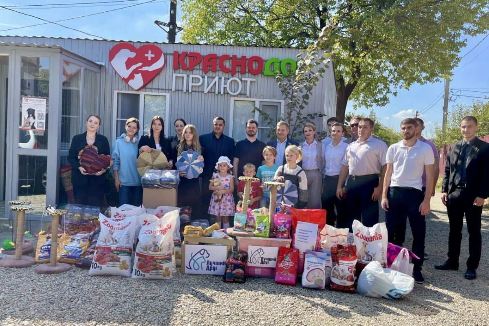

Наши волшебные волонтеры Краснодара!
Здесь вы можете ознакомиться с нашими волонтерами, а также пополнить их ряды!
Благодаря нашим волшебным волонтерам мы из первых рук узнаем о животных,которым требуется помощь и дом.
Также вы можете связаться с ними,если нашли животное на улице.
Приют «Краснодог»: Один из самых известных приютов для пострадавших животных, принимает кошек и собак.
Альянс Защитников Животных — Краснодар: Занимается правовыми вопросами и защитой животных, тел.: +7 (952) 851 28 70.
Приют «Ковчег»: Находится по адресу: с. Горное, ул. Алиготе, 3.
Приют «Матроскин»: Помощь бездомным животным.
KubanPets: Сообщество волонтеров.
Фонд «Ключ Добра»: Активно работает в направлении зоозащиты.
